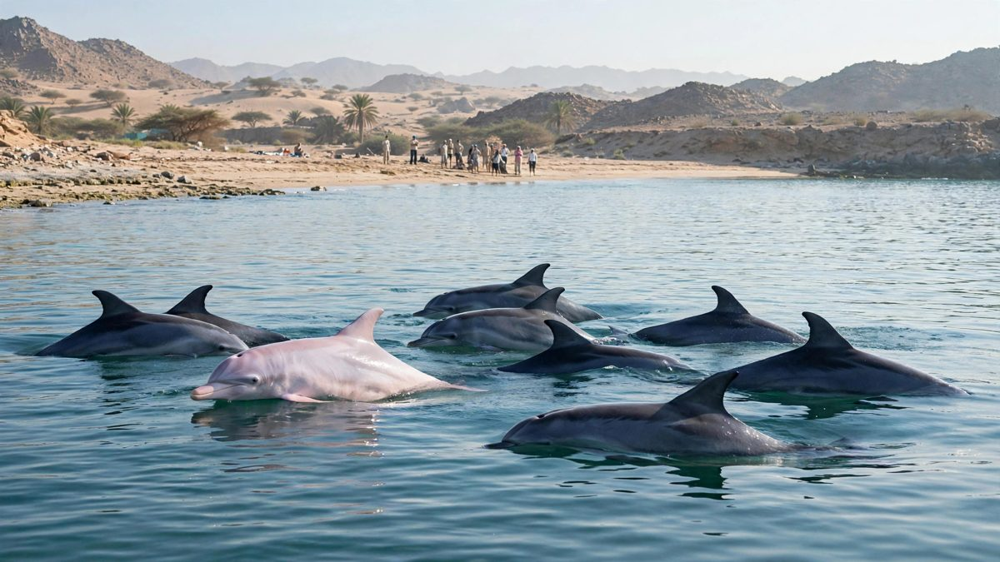

ओमान तट पर गुलाबी डॉल्फिन: वायरल वीडियो, प्रजाति की पुष्टि नहीं
मस्कट के कांताब बीच के पास फिल्माई गई हल्की गुलाबी डॉल्फिन वायरल हो गई है। समुद्री विशेषज्ञों ने प्रजाति की पुष्टि नहीं की है, और एक ओमानी लेखक का कहना है कि यह उम्र के साथ फीकी पड़ी रिसो डॉल्फिन हो सकती है।

मुख्य बिंदु
- मस्कट के पास कांताब बीच के सामने तैरती हल्की गुलाबी डॉल्फिन इस सप्ताह के सबसे ज्यादा साझा किए गए वन्यजीव क्लिपों में से एक बन गई है। और हर कोई जो सवाल पूछ रहा है, उसका ईमानदार जवाब यह है कि अभी तक…
- वीडियो में एक हल्के रंग की डॉल्फिन किनारे के पास अपने समूह के गहरे रंग वाले सदस्यों के साथ सतह पर आती दिखती है, जिसे बीच पर आए लोगों ने फिल्माया। ये क्लिप पहले करीब 15 अक्टूबर को एक स्थानीय माध्यम…
- गुलाबी डॉल्फिन भीड़ खींचती है क्योंकि लोग इस रंग को अमेजन नदी की डॉल्फिन से जोड़ते हैं, जो दूसरे महाद्वीप की मीठे पानी की प्रजाति है। ओमान की खाड़ी में गुलाबी जानवर उस तस्वीर में फिट नहीं बैठता,…
मस्कट के पास कांताब बीच के सामने तैरती हल्की गुलाबी डॉल्फिन इस सप्ताह के सबसे ज्यादा साझा किए गए वन्यजीव क्लिपों में से एक बन गई है। और हर कोई जो सवाल पूछ रहा है, उसका ईमानदार जवाब यह है कि अभी तक किसी ने पुष्टि नहीं की कि यह है क्या।
वीडियो में एक हल्के रंग की डॉल्फिन किनारे के पास अपने समूह के गहरे रंग वाले सदस्यों के साथ सतह पर आती दिखती है, जिसे बीच पर आए लोगों ने फिल्माया। ये क्लिप पहले करीब 15 अक्टूबर को एक स्थानीय माध्यम ने साझा किए और एक्स व इंस्टाग्राम पर फैल गए। बुधवार तक यह दृश्य ओमान से बहुत बाहर ध्यान खींच रहा था।
यह क्यों मायने रखता है
गुलाबी डॉल्फिन भीड़ खींचती है क्योंकि लोग इस रंग को अमेजन नदी की डॉल्फिन से जोड़ते हैं, जो दूसरे महाद्वीप की मीठे पानी की प्रजाति है। ओमान की खाड़ी में गुलाबी जानवर उस तस्वीर में फिट नहीं बैठता, और यही वजह है कि समुद्री विशेषज्ञ सावधानी की अपील कर रहे हैं।
सिर्फ रंग से डॉल्फिन की पहचान नहीं होती, और उपलब्ध फुटेज दूर से है। ओमानी अखबार अल शबीबा में लिखते हुए अब्बास अल जदजाली ने सुझाव दिया कि मूल वीडियो के जानवर गोल सिर और पीठ के पंख के आधार पर रिसो डॉल्फिन जैसे लगते हैं। रिसो डॉल्फिन उम्र के साथ त्वचा पर निशान बढ़ने से फीकी, लगभग सफेद हो सकती है।
एक दूसरी सावधानी भी है: वायरल क्लिपों के कुछ संस्करणों में थाईलैंड में फिल्माई गई गुलाबी हंपबैक डॉल्फिन का अलग फुटेज मिला हुआ लगता है।
पृष्ठभूमि
जो पुष्ट है वह कम है। कांताब बीच के पास गुलाबी आभा वाली डॉल्फिन फिल्माई गई। वीडियो वायरल हुए। विशेषज्ञों ने प्रजाति की पुष्टि नहीं की। डॉल्फिनों की संख्या और वे क्षेत्र में कितनी देर रहीं, यह भी पुष्ट नहीं है।
आगे क्या होगा
ओमान के पर्यावरण अधिकारियों का बयान या पास से लिया गया नया फुटेज विशेषज्ञों को सिर, पंख और त्वचा ठीक से जांचने देगा। तब तक पहचान साझाकरण की गति तक नहीं पहुंची है।
स्रोत
इनशॉर्ट्स और लेटेस्टली ने 21 अक्टूबर 2026 को कांताब दृश्य और उसके वायरल प्रसार की रिपोर्ट की। हाइपफ्रेश ने क्लिपों के पहले प्रसार और अल शबीबा टिप्पणी की रिपोर्ट की।